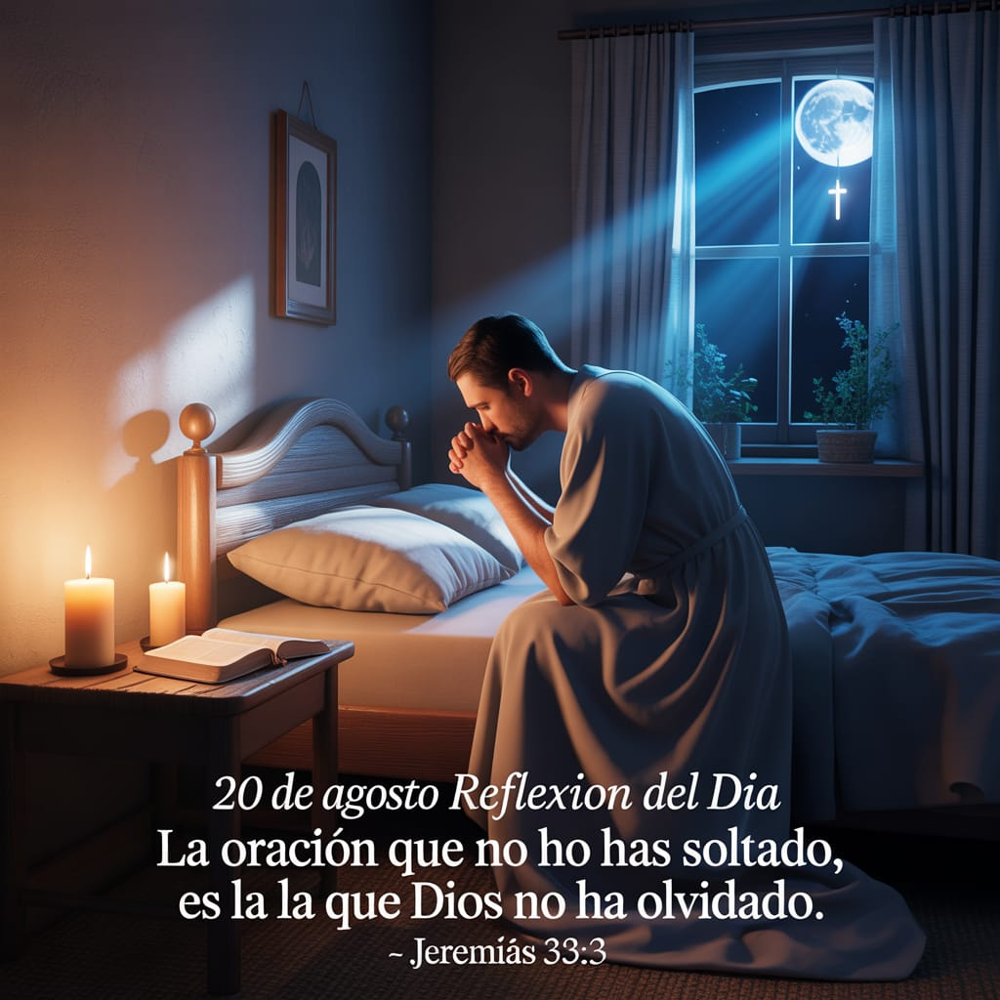

Reflexiones Cristianas
Inicio
Versículo del día
Reflexión
Redes Sociales
Palabras que transforman el alma
Cada día una reflexión de esperanza para tu corazón ✝️
📖 Versículo del Día
📅 Reflexión del Día

📬 Seguime en mis redes sociales
Canal de WhatsApp
TikTok
Facebook